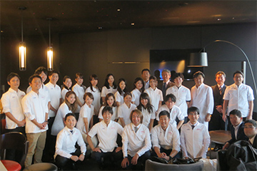
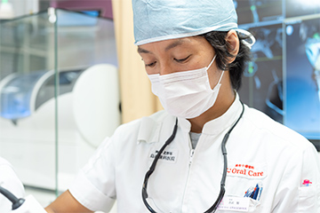
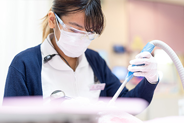
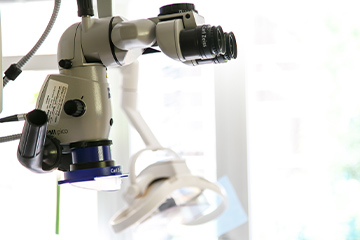

079-562-8471
079-562-8471- Home
- コンセプト・悠和会について
医療法人社団 悠和会の診療コンセプトYuwakai
兵庫県神戸市三宮の「北野坂鳥居歯科医院」と東京都港区の「麻布十番歯科」の2つの歯科医院を有する「医療法人社団 悠和会」は、ホスピタリティ精神を大切にスタッフが一丸となって、患者様のお口の健康のために日々診療します。「訪れた方、すべてを笑顔にする」……そのために日々、研鑽を重ね、歯科診療をご提供します。
医療法人社団 悠和会とは

Dr.鳥居秀平が理事長を務める医療法人社団グループで、兵庫県神戸市三宮の歯医者「北野坂鳥居歯科医院」と東京都港区の歯医者「麻布十番歯科」を開院しています。相互の歯科医院のスタッフが連携を密にして、コミュニケーションを大切にしながら、一人ひとりの患者様に合った治療をご提供するために、日々の診療を行っています。
医療法人社団 悠和会のこだわり
思い
訪れた患者様一人ひとりにご満足いただき
お帰りの際には笑顔になっていただきたい
この「思い」が私たちの基本姿勢です。そのための日々のひたむきな研鑽を忘れません。
誠意
歯科医師をはじめスタッフ全員が患者様に誠心誠意、対応いたします。コミュニケーションを大切に丁寧なカウンセリングを行い、治療計画をたて、細心の注意を払って治療するのです。そして「思い」を達成することにつなげます。
安心
患者様の不安を取り除くために、丁寧なカウンセリングを行い、疑問を払しょくします。治療のゴールや治療法をしっかりご理解いただければ、安心して診療に臨んでいただけます。
感謝
患者様と私たちスタッフがお互いに心からの笑顔になり、感謝の気持ちがあふれるような関係になって、長いおつきあいをしていきたいと思っています。治療だけでなくメンテナンスで、しっかり予防してずっとお口の健康をサポートします。
患者様の想いをくみ取った質の高い治療

お口のトラブルをかかえ、歯科医院を訪れる患者様は不安な気持ちでいっぱいだと思います。そのため、どのような治療を望んでいるのかを、なかなかうまく伝えられないかもしれません。
しかし、心配はいりません。

当院では「痛みをなるべく抑えて欲しい」「口元の金属が目立たない治療をして欲しい」など患者様のご希望をくみ取ることが大切だと考えています。コミュニケーションが取れるように患者様のお話に耳を傾け、不安点を引き出し分かりやすくご説明して不安を払しょくし、治療のゴールやご要望をお伺いするように丁寧なカウンセリングを行います。
そして、患者様にご満足いただけるような治療をご提供するのです。そのためにつねに治療技術の向上に努め、精度の高い治療をご提供できるように努めています。
さまざまな機器を活用した治療

医療は日々進歩しています。歯科医療においても、優れたあたらしい治療システムや設備、材料、技術が開発されています。当院では患者様に安心・安全な治療をご提供できるようにつねに、優れた技術の習得に努め、日々の研鑽を忘れません。そして、できるだけ患者様の負担を抑え、できるだけスピーディーな治療のためのさまざまな機器を活用します。
たとえば、3D立体画像による診断を可能にする歯科用CTや削ることなしにレーザーを使って虫歯診断をするダイアグノデント、患部を拡大視して精密な処置につなげるマイクロスコープ、そして歯や人工歯の色合いを判定するクリスタルアイ（歯の色調測定器）などの設備を完備し、活用しています。
 WEB予約
WEB予約